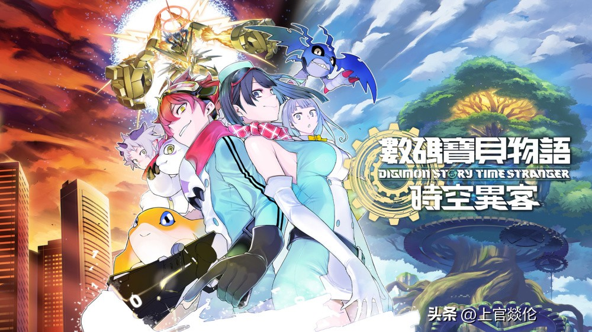

一口气看Switch七月18款新作！两款第一方大作
7月Switch玩家钱包告急：18款新作 + 两款任天堂第一方，连NS2都有份。
我本来只想找一款能玩的新东西，结果清单越拉越长——初代和Switch2基本都能上车，而且老游戏升到新机后画质也会明显升级。

---
【第一方压轴】
《节奏天国：奇迹之星》试玩版我第一时间下了。上一作还是11年前，这次手感一脉相承，跟着鼓点按键就行，新增多人联机。试玩版对节奏判定相当宽容，新手连玩几局也不容易卡关，这点很友好。7月2日双平台同步发售，Switch1流畅运行，Switch2帧率更高、响应更跟手。
---

【RPG重头】
《数码宝贝物语：时空异客》已经被我身边几个数码粉盯上了。收录400多只数码兽，剧情横跨过去与未来两条时间线。Switch2版支持4K输出，试玩存档可直接继承到正式版——省去重打流程，对想提前尝鲜的玩家非常实用。
如果你偏爱轻松治愈的节奏，下面这款经营类或许更对胃口。
---
【经营模拟】

《月光岭物语》设定挺新鲜：你扮演吸血鬼，经营魔法农场，邻居是狼人、魔女这类非人类。7月9日发售，Switch2版额外加入动画滤镜，实际视觉效果如何，待发售后实测再看。
---
【都市奇幻】
Falcom的《京都迷城 樱花幻舞》主打校园日常与异界探索交替推进，剧情体量据称相当充实。Falcom的文本一贯扎实，喜欢都市奇幻、重视故事沉浸感的玩家值得关注。
说完了单人体验，再来看看适合拉上朋友一起玩的联机向作品。
---
【联机休闲】
《Go-Go Town!》支持双人合作建设城镇；《卡片召唤师》经典卡牌对战回归；《喷射战士》衍生涂地玩法也能随时开一局，轻松欢乐。
---
【动作焕新】
《蔚蓝幻想 Relink》包含完整版内容及新增DLC，Switch2版做了专门优化。《异度神剑 2 升级版》修复了原版帧率和贴图问题——原版某些场景卡顿比较影响体验，NS2若能稳定60帧，绝对值得老玩家重刷一遍。
---
【冷饭合集与其他】
剩下还有《网球王子》合集、《健身拳击》升级版、《最终幻想 X/X-2》高清版、街机射击《Truxton Extreme》续作等。品类确实杂：音游、RPG、经营、动作射击全都有，老Switch基本都能跑。
---
总体来看，7月阵容对NS2用户尤其友好——新作和升级版都能发挥硬件优势；老NS玩家也不缺心头好，绝大多数游戏仍可顺畅游玩。后续我会针对Switch2版做具体帧率实测，用数据说话，不编不吹。
关于我们
📱 公众号名称：三天笔记
✍️ 作者：曾三天
扫码关注公众号，获取每日最新资讯

商务合作与版权
商务合作 / 内容投稿 / 品牌推广
请关注公众号「三天笔记」后台留言联系
版权声明：本文由作者整理，转载需注明出处。